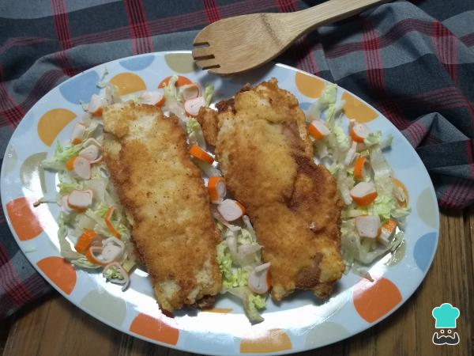

CACHOPOS DE MERLUZA
Ingredientes para hacer Cachopo de merluza
4 filetes de merluza sin piel ni espinas
4 lonchas de queso cremoso y jamón serrano
1 huevo
1 paquete de pan rallado
200 gramos de harina común
1 pellizco de sal
3 vasos de aceite de girasol
Como hacer un chachpo de merluza
1ºLos filetes de merluza que utilices deben ser bastante finos. Así, podrás trabajar con facilidad cada
pieza al rellenarla. Si ves que no son muy finos, puedes filetearlos con cuidado o aplastarlos un
poquito.
2ºVamos a hacer dos raciones, así que prepararemos 4 filetes de pescado, 4 lonchas de jamón y 4 de queso.
Bate el huevo y añade un pellizco de sal. Prepara la harina en un plato amplio y plano, haz lo mismo con el
pan rallado. truco: Si no tienes jamón serrano, utiliza jamón cocido o de york.
3ºSobre un plato plano, ve formando los cachopos de merluza. Coloca primero una loncha de pescado, luego una
de jamón y otra de queso. Repite con otra lámina de jamón y queso y finaliza con el filete de
merluza.Truco: Prescinde de añadir más sal porque al agregar jamón serrano y queso tendrás
suficiente.
4ºHaz lo mismo con la siguiente pieza. Intenta recortar los picos que te salgan de las lonchas. Mientras
tanto, pon a calentar el aceite en una sartén honda o wok.Truco:: Puedes rellenar con las cantidades
que desees o disminuir las que te recomendamos.
5ºAhora viene la parte mas minuciosa, pero con un poco de destreza saldrá bien. Empana primero con harina la
pieza montada, después con huevo y, al final, pásala por el pan rallado.
6ºUna vez tengas ambas piezas ya empanadas de los tres ingredientes, con mucho cuidado deposita de uno en
uno para que frían bien con el aceite muy caliente. Cuida que no se queme el empanado, deja unos 8 minutos
aproximadamente por cada lado. Prepara una fuente con papel secante de cocina para colocar los cachopos y
quitar el exceso de aceite.
7º¡Quedan súper crocantes! Es la oportunidad perfecta para servir los cachopos de merluza con jamón y queso
sobre una juliana de lechuga iceberg y unas láminas de surimi.
